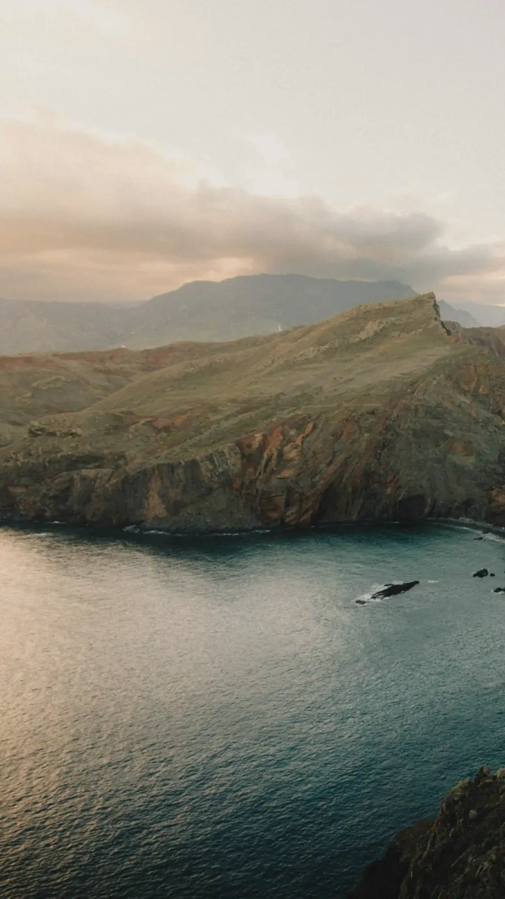
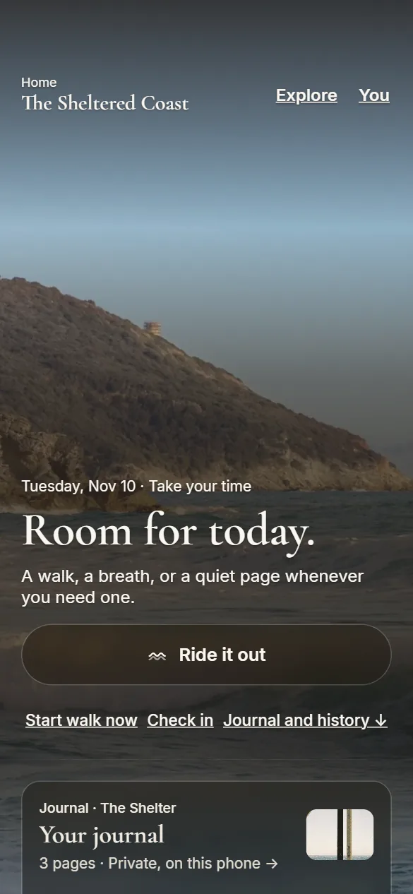
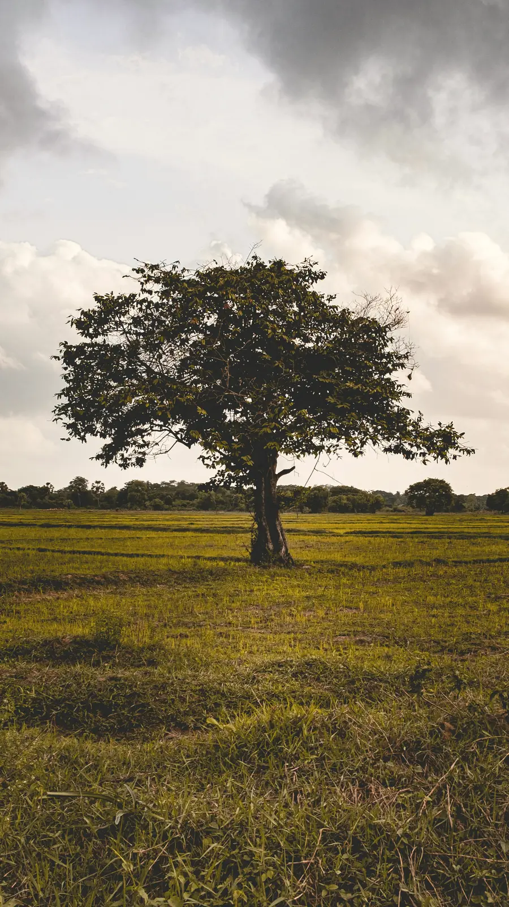
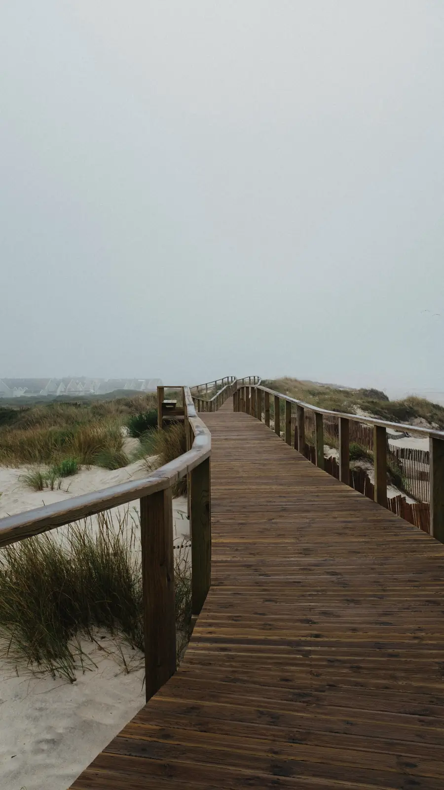
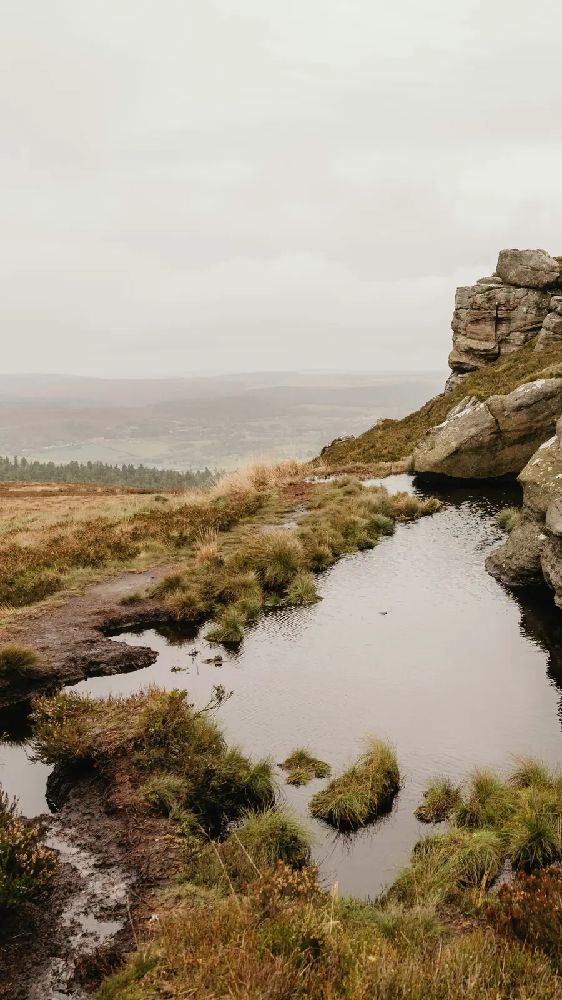
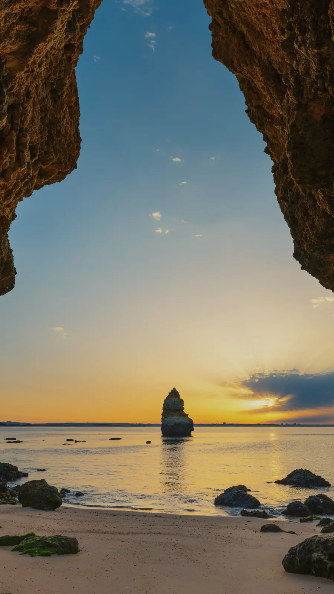
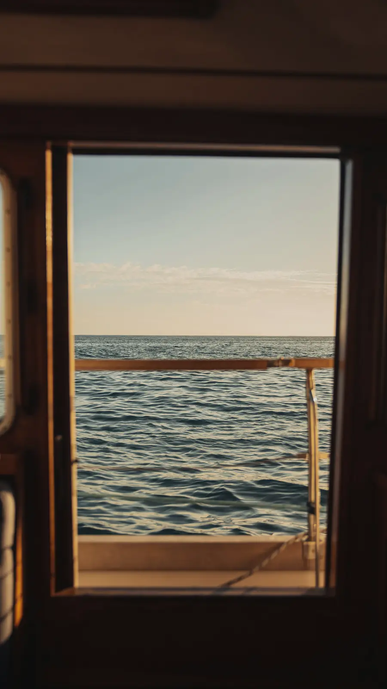
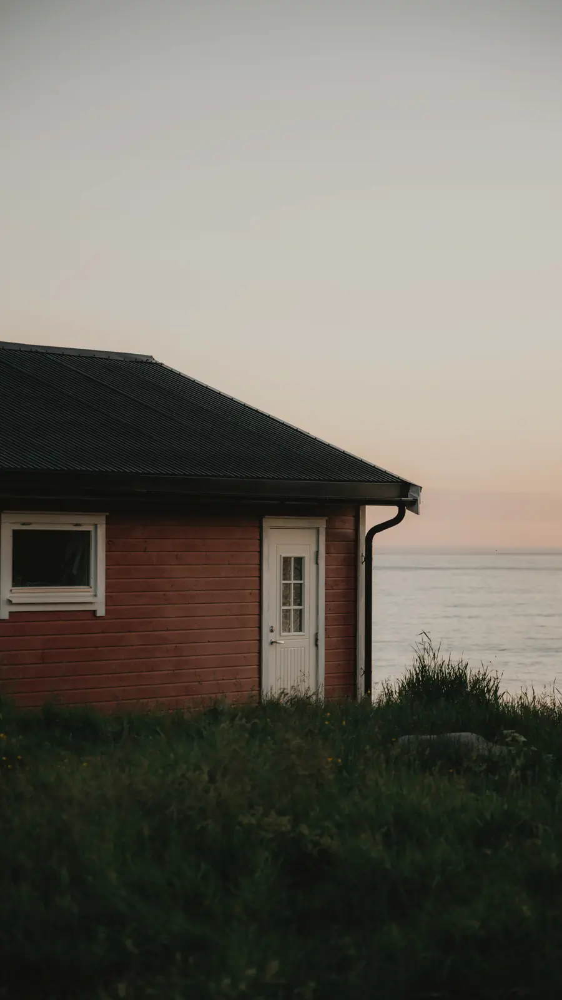

01The Sheltered Coast · daylight
Urges pass, like waves.
Urge Walk is a small island for the next few minutes. When an urge hits, take a walk, breathe for a minute, or come back to your senses, then let it pass.
Coming to iPhone.
Need a minute now? Breathe at the Tide Pool

02The Clearing · daylight
What feels doable right now?
One button, Ride it out, on Home and at the top of every place. It asks one question and offers four answers. Hold it, and a walk starts straight away.
- WalkAt your own pace
- BreatheOne slow minute
- GroundOne sense at a time
- Just log itYou already rode it out


03The Path Ahead · daylight
Walk it out.
Your usual length, a custom one up to two hours, or no timer at all. The time stays right if your screen locks, and finishing early is fine. Coming back is the point, not the distance.


04The Tide Pool · daylight
Breathe for a minute.
In for four, hold for three, out for six. You can try it here.
Ready when you are

05The Shore · evening
Come back to right here.
Five things you can see. Four you can touch. Three you can hear, two you can smell, one you can taste. One sense at a time, as slowly as you like.
Ground yourself now
06The Cove · evening
You can just be here.
Nothing to finish, nothing to keep up with. Stay a while with the sound of the tide, on a timer or until you stop it.

07The Shelter · evening
Somewhere for your words.
A private journal on your phone. After a walk, a line, a word, or nothing at all. Whole pages when you want them.

08The Outlook · evening
Where you have been.
After each urge, one question: what did it do? Nothing is graded, there are no streaks to break, and a hard moment never resets your clean days.


09The Cottage · evening
Yours, and only yours.
No ads, no tracking, no account. Everything stays on your phone, and a backup file is yours to export whenever you like. Add someone you trust, and Ride it out shows a Text button that opens your own Messages. For adults 18 and older. The core features are free.
Urge Walk is not a crisis service and isn’t a substitute for professional care. In the US, call or text 988 (Suicide & Crisis Lifeline, 24/7). Outside the US, find a helpline.

10Night
Coming to iPhone.
Urge Walk is being finished for the App Store. Until then, the one-minute breathe and 5-4-3-2-1 grounding on this site are free to use, any time.
Why I made this
I know what it feels like when your own head gets too loud and sitting still only makes it heavier. Through months of my own toughest stretches, I learned that you cannot always think your way out of an urge or an anxious loop. Sometimes, the only thing that actually helps is putting your shoes on, heading out to the park, and letting physical movement quiet things down.
I built Urge Walk because I needed a straightforward tool that didn’t overcomplicate that process. Designed for adults as a practical support tool, and not a replacement for professional care, the app keeps the focus on simple forward motion. You don’t have to figure everything out today. This app is just for getting through the next few minutes, one walk at a time.
— Darius Tatum